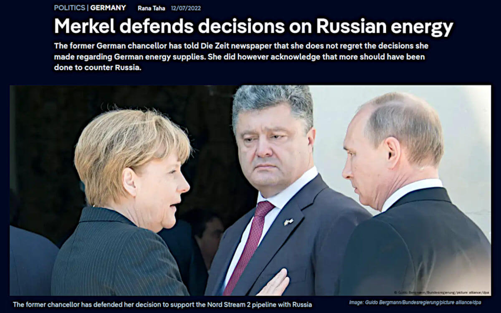

Non c'è il 2° podio negli schemi Ponzi
Quando Angela salvò l'Italia
Sebbene con alti e bassi, lo spread per l'Italia cala dal Q4/2022. Cosa è successo in quel periodo?
L'intervista della Merkel
Le date documentate sono quelle delle pubblicazioni: Der Spiegel, novembre 2022 e Die Zeit, 7 dicembre 2022. Tuttavia, è assolutamente ragionevole che l'intervista sia stata effettuate settimane prima, almeno prima della fine di settembre 2022. Un ritardo fra il rilascio dell'intervista e la sua pubblicazione, per diverse ragioni molto concrete: una figura politica di primo piano che rilascia dichiarazioni di portata storica in un momento molto delicato e in un contesto esplosivo che richiede verifiche rigorose, consultazioni con attori istituzionali fra cui è ragionevole inserire anche i vertici europei della NATO, almeno tramite il capo dell'esercito tedesco e/o del Cancelliere in carica, ed un'eventuale revisione dell'intervista stessa coerente con un ciclo di approvazione complesso. Dichiarazioni che sicuramente non sono state fatte a caso e pubblicate senza un intento preciso, di estrema importanza e urgente da non poter aspettare le fine della guerra. Quindi una comunicazione strategica come atto politico collettivo in seno alla Germania di cui si fece personalmente carico la Merkel come ex-Cancelliera ma che era in carica al tempo dei fatti.ⓘ
Nel 2015, la Merkel aveva rilasciato interviste a Bild a ridosso del secondo trattato. Ma il Bild — popolare, molto letto e spesso in posizione critica verso il governo Scholz — non era il media adatto.
Poiché nel 2022 l’obiettivo era la massima credibilità diplomatica. Mentre nel 2015, era una questione di conquistarsi il favore ed eventualmente i voti anche tra i meno propensi a quell'area politica che sosteneva la Merkel.
Al contrario Der Spiegel ha una lunga storia di inchieste su temi di sicurezza, intelligence, politica estera, e un profilo molto autorevole. Mentre Die Zeit è considerato il settimanale più intellettuale e rispettato della Germania, con ampia credibilità a livello europeo.
Quindi un'intervista che è stata presentata e confermata da due testate giornalistiche altamente specializzate, professionali e autorevoli. Il verbo sulla questione, sebbene in lingua tedesca e per gli abbonati o su carta stampata, quindi con una diffusione non immediatamente universale.
Cosa che ha ovviamente permesso alla miriade di "fact-checker" di contestare l'interpretazione di quelle dichiarazioni eppure anche un solo passaggio, qui tradotto lascia pochi dubbi a riguardo:
Merkel
Ritengo che l'avvio dell'adesione dell'Ucraina e della Georgia alla NATO, di cui si è discusso nel 2008, sia stato sbagliato. I due Paesi non avevano i prerequisiti necessari per farlo, né erano state pienamente considerate le conseguenze di una simile decisione, sia per quanto riguarda le azioni della Russia contro la Georgia e l'Ucraina, sia per quanto riguarda la NATO e le sue norme di mutua assistenza. E l'accordo di Minsk del 2014 è stato un tentativo di dare tempo all'Ucraina.
Il default tecnico dell'Italia
Lo spread indica quanto costa rifinanziare il debito pubblico e quindi, in sostanza, quanto ci costa la gestione finanziaria dello stesso. Ogni volta che abbiamo cercato di ridurre il debito pubblico è stato un massacro. Invece, è stato possibile aumentare il debito pubblico SOLO perché abbiamo creato inflazione.Il default tecnico del debito USA
Ma è ancora più grave, perchè prima dell'euro era privilegio esclusivo del dollaro americano espandere la massa monetaria e diluire il suo valore quindi creare inflazione, con l'euro questo "privilegio" è diventato anche nostro e se non lo facessimo anche noi, il resto del mondo preferirebbe usare l'euro per gestire le loro riserve finanziarie.U.S. public debt default
Unfortunately, the U.S. public debt is gone in default after the grace period expired, that day Warren Buffett retired. The day after everything based on USD gets into a Ponzi scheme, technically speaking. How did the U.S. public debt default? Long story short: no any USD backup, anymore (we don't trust anymore). Gemini2 is debating about details but — in fact, for everyone who knows in depth the financial mechanisms — during G7 in Puglia (2024) the Saudi Arabia puts a stop to the Petrodollar agreement, de-facto removing the last real-world collateral to backup the USD. Unsurprisingly, they found themselves, after the grace period expired, sitting on an Everest of paper money and suddenly they decided that investing $600B in AI tech in the USA and buying $142B american weapons was a good way to protect their position. Is this explaining to you something about how quickly some "positions" are evolving? Good, then the whole story (in development, watch outside) will amuse you much more! Warren Buffett was the #1 non-speculative finance guru investor before he retired — which cannot be a 1-day disengagement considering his position and the need to properly delegate his duties, hence he is formally the Berkshire Hathaway CEO and president — his motto was:in the market, winners are those can keep a position as long as they willwhich defines him as a "non-speculative" investor, as long as we can consider a "speculative trader" everyone rely on high-frequency transactions to earn a sort of gain. By contrast, every HF trader can liquidate in a single working day their positions, something which cannot be reasonably done by those who have a long-term investment strategy.
Il grande avversario di Trump
Aggiornamento del 2025-05-17
Il Moloch che l'amministrazione Trump dovrà affrontare è quei $7T di debito pubblico da rinnovare. Ma per darvi un'idea di cosa significhi la finanza negli USA e quindi il controllo del debito pubblico c'è l'altro screenshot e allora andiamo a mettere in prospettiva quei $7T con tutto il resto.
Conclusione
Quindi non stiamo osservando solo un fallimento del debito pubblico USA ma anche sociale e produttivo (debito privato), anche finanziario e commerciale (esposizioni) e infine infra-strutturale perché è sufficiente ricordarsi della tragedia del ponte di Baltimora che ha portato alla luce altri 17mila ponti a rischio, dell'incendio di Los Angeles, dello stato della rete ferroviaria e in particolare di quella merci che è rimasta al '900, dei problemi di aggiornamento informatico come i sistemi di radiocontrollo dell'aeronautica civile come il black-out di 92 secondi all'aeroporto di Newark oppure alla marina militare che ancora utilizza Windows NT, e che fra tutti i problemi di aggiornamento è probabilmente il meno grave. Per coloro che pensano che rimanga il valore delle proprietà immobiliari da conteggiare in questo scenario, vale la pena di ricordare loro l'esegesi della bolla speculativa sui sub-prime loans negli USA: intere periferie che prima erano schiere di rinomate villette per la classe media, abbandonate e ridotte a spazzatura invendibile anche a $1 perché quelle zone sono de-facto diventate prive di servizi e di legge: 100% far-west, quindi periferie fantasma. In un contesto del genere servirebbe prudenza ma a questo stadio è più corretto dire psicofarmaci (ansiolitici) di cui il 25% degli americani fa uso regolare e probabilmente un altro 25% ne fa abuso insieme a droghe di vario tipo fra cui il Fentanyl. Invece c'è Trump che io personalmente adoro come presidente perché l'alternativa woke era pura follia — per definizione alienazione dalla realtà — e perché penso ci regalerà enormi soddisfazioni e anche uno spettacolare mandato in termini di show.La follia woke
Share alike
© 2025, Roberto A. Foglietta <roberto.foglietta@gmail.com>, CC BY-NC-ND 4.0